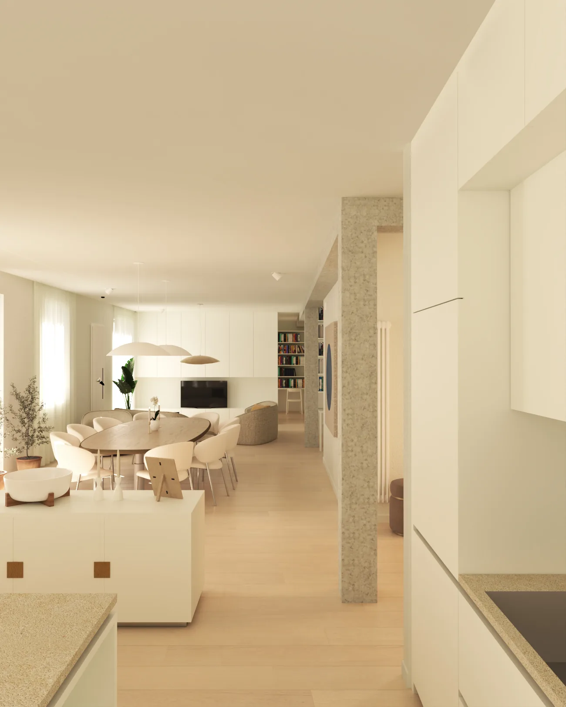
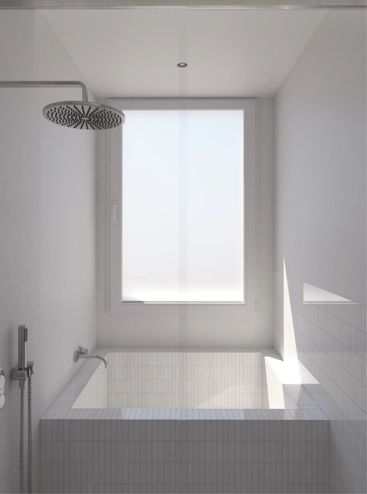

1 / 6
Casa AD
Wohnung
Via Malmusi, Modena, Italien
2025
mit tilde studio
Wohnung
Via Malmusi, Modena, Italien
2025
mit tilde studio
Der Wohnbereich ist ein durchgehender Raum entlang der Fenster, gegliedert durch Portale. Renderings des Wohnbereichs und der Dusche VISION.
Samuele SilvestriArchitekt
Via Asiago 58, 41125 Modena
info@samuelesilvestriarchitetto.com
+39 366 493 8286
Instagram Architektenkammer Modena, Nr. 1437 – Sektion A
USt-IdNr. IT04180440366 Datenschutz (auf Italienisch)




